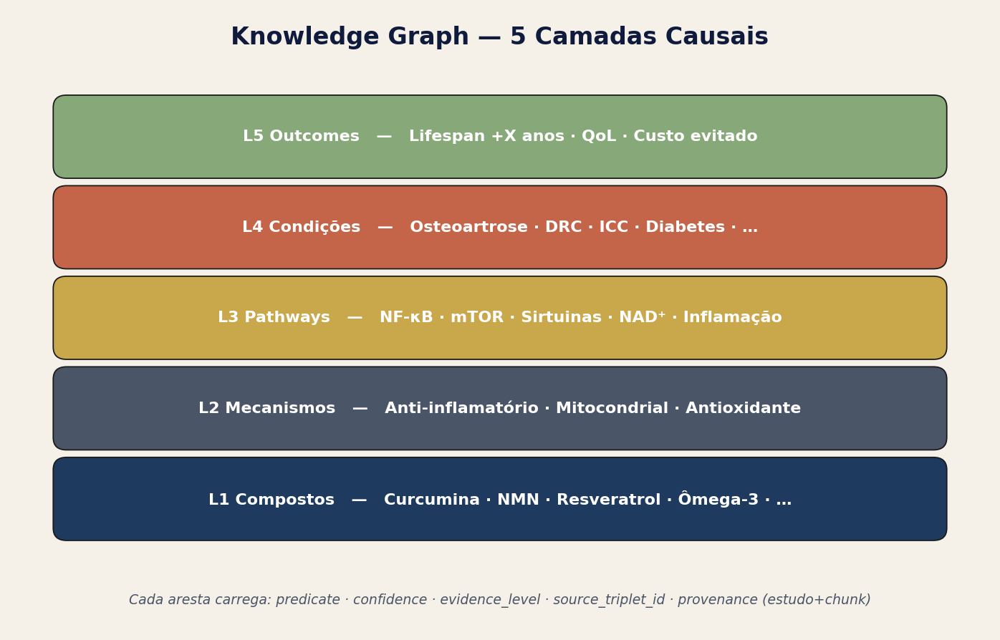
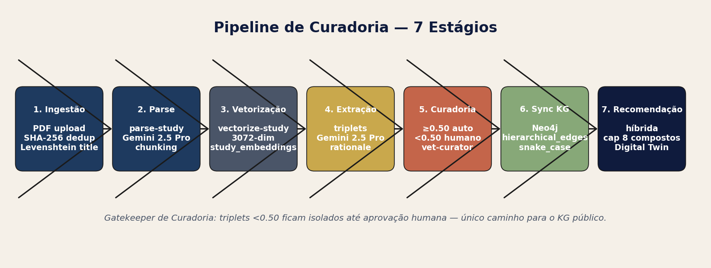
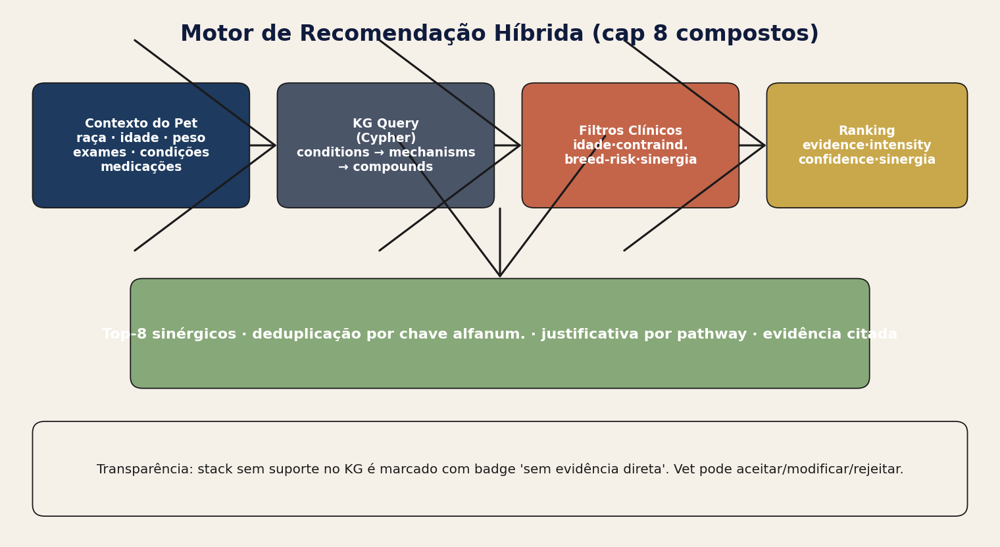
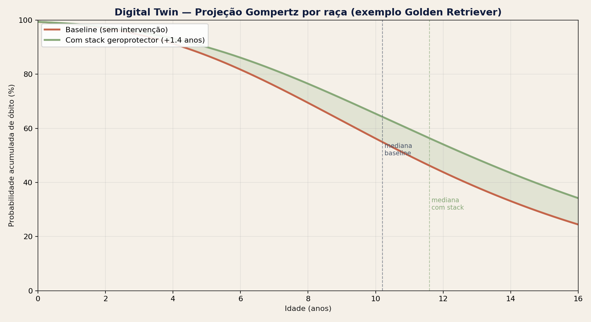

2026-05-31
Version: 5.2.0 · Date: 31/05/2026
· i18n: 1.115.6 · Type: standalone
cumulative
Supersedes: v5.1.0 (18/05/2026) · Operational
authorship: PetMoreTime · Public brand:
Senex AI
This audit is self-contained. It fully inherits the structural base of v3 (10/05/2026) and v5.1.0 (18/05/2026), updates live database metrics, and explicitly marks the changes from the period 18/05 → 27/05/2026 in Section 1.1. v5.1.0 is preserved for historical purposes (
superseded_by = v5.2.0).
The Senex AI platform (public brand; internal successor to VetGraphRAG/VetMedGraph, operated exclusively by PetMoreTime) is a veterinary clinical decision-support system focused on metabolic and degenerative conditions in canines, supported by a 5-layer causal Knowledge Graph (Compounds → Mechanisms → Pathways → Conditions → Outcomes), hybrid recommendation limited to 8 synergistic compounds per patient, a sigmoidal (Gompertz) Digital Twin per breed, and a HITL (Human-In-The-Loop) pipeline that prevents the integration of any triplet or population insight without curatorial approval.
Status as of 05/31/2026:
has_role on all critical tables, gatekeeper curation
now extended to population insights, standardized SNOMED-CT VetSCT + UMLS
taxonomy, and mandatory quantitative evidence validation.ai_prompt_versions; 97 public
tables; 6 users with roles; 668
pets (5 demo).5 relevant structural changes, all with a direct impact on previously listed gaps/risks:
| # | Change | Area | Impact on gaps/risks |
|---|---|---|---|
| 1 | AI Scientist (renamed from “Prioritizations”) repositioned to Research & Development | admin/AI | Supports GMLP §1 (clear scope). Repositions it as a scientific product, not an operational task. |
| 2 | Vet-curator validation now mandatory in
cohort_insights (status
pending/approved/rejected/needs_changes; automatic trigger for a new
audit) |
curation | Closes the HITL loop before a population insight becomes a clinical rule. Mitigates the "self-approved wrong triplet" risk and the "formal PCCP" gap. |
| 3 | Mandatory quantitative evidence
(n_supporting, n_total,
prevalence, effect_size,
comparison_baseline, notes) |
curation/AI | Eliminates self-declared confidence by the LLM. Addresses FDA §III.B (transparency) and EMA §4.2 (traceability). |
| 4 | PT/EN canonicalization +
lab-flag-canonicalizer.ts (HCT↔︎Hematocrit, ALT↔︎TGP,
AST↔︎TGO, FA↔︎ALP, Urea↔︎BUN, Creatinine↔︎Creatinine) |
i18n/clinical | Ends the Osteoarthritis/Osteoartrite duplication. Reinforces the core's "Bilingual System" rule. |
| 5 | Hardening of suggest-cohort-ideas:
migration to google/gemini-3.1-pro-preview + server-side
validation of 4 rules + gpt-5.4 fallback |
infra/AI | Forced coverage of the 6 target models. Mitigates "LLM drift" (medium). |
(subject, predicate, object)
extracted from a scientific study via LLM, with normalized strength and confidence.has_role(auth.uid(), 'admin').years_gained per
intervention.src/i18n.ts; must be incremented with each bilingual change.This audit combines 4 approaches:
src/,
supabase/functions/, supabase/migrations/,
src/data/biomedical-taxonomy.ts,
src/data/projectOrganograma.ts.read_query on
18 tables (technical_audits, audit_requests, audit_settings,
user_roles, triplet_extractions, hierarchical_edges, study_embeddings,
processed_studies, health_conditions, breeds, breed_predispositions,
dosage_references, lab_ranges, meta_studies, nutraceuticals,
drug_substances, vet_ontology_nodes, ai_prompt_versions).┌─────────────────────────────────────────────────────┐
│ L4 — Outcomes (longevity, quality of life) │
├─────────────────────────────────────────────────────┤
│ L3 — Conditions (191 conditions; metabolic/degen.) │
├─────────────────────────────────────────────────────┤
│ L2 — Pathways (mTOR, AMPK, NAD+, autophagy…) │
├─────────────────────────────────────────────────────┤
│ L1 — Mechanisms (anti-inflammatory, geroprotective…)│
├─────────────────────────────────────────────────────┤
│ L0 — Compounds (30 nutraceuticals + 50 drugs) │
└─────────────────────────────────────────────────────┘
Total of 941 nodes in the veterinary ontology + 254 breed predispositions covering 81 breeds with individual Gompertz curves.

extract-study-entities via
EdgeRuntime.waitUntil.text-embedding-004
(768 dimensions via pgvector).embedding_model_version (P1 gap:
consolidated migration pending).search_study_chunks(query_embedding, match_study_id, match_threshold=0.7, match_count=5).study_embeddings.embedding.97 tables in the public schema. Critical tables with
RLS:
user_roles —
app_role enum ('admin','moderator','user'). The
is_admin() / has_role() function is SECURITY DEFINER,
prevents recursion.technical_audits, audit_requests,
audit_settings — admin only.pet_profiles, pet_conditions,
pet_exams, pet_consultations,
pet_medications — vet/admin.triplet_extractions, hierarchical_edges,
study_embeddings — broad authenticated read, restricted
write.cohort_insights — vet_review_status
field now with check constraint + index (new in v5.2.0).study_pdfs,
pet_exams_pdfs, meta_studies_pdfs,
ontology-indexes (private); pet-photos,
meta-study-covers (public).
| Function | Primary Model | Fallback | Task |
|---|---|---|---|
| extract-study-entities | gemini-2.5-pro | — | Stage 1 entities |
| process-study | gemini-3.1-pro-preview | gpt-5.4 | Stage 2 triplets |
| enrich-triplet | gemini-2.5-flash | — | Stage 3 intensity/dosage |
| chat-meta-study | gpt-5.4 | gemini-2.5-pro | Review chat |
| analyze-cohort-patterns | gemini-3.1-pro-preview | gpt-5.4 | Population insights (reinforced schema) |
| suggest-cohort-ideas | gemini-3.1-pro-preview (★ new) | gpt-5.4 | 6 cohorts × 6 models |
| relations-auditor | gemini-2.5-pro | — | Conversational KG auditor |
| translate-and-categorize-conditions | gemini-2.5-flash | — | i18n PT/EN |
67 Edge Functions deployed in total; 8 with versioned prompts
in ai_prompt_versions.
node.properties.id (Supabase UUID), never
elementId (core memory).curation_status='approved') sync to Neo4j;
a trigger resets synced_to_neo4j upon demotion.react-force-graph-3d with
WebGL to scale to 38k+ edges.
parse-pet-exam-pdf).condition-name-localizer,
lab-flag-canonicalizer,
clinical-name-canonicalizer.clinical-discovery-cross-reference-analysis correlates
labs/meds/conditions/breed.useTreatablePathways trims the KG to relevant
conditions/compounds.years_gained adjusted by breed.
condition-insights edge function consumes the pet's complete
clinical context.nmn_v2_internal); KG
fallback when data is missing.evidence-based-projection-engine calculates baseline
severity × sigmoidal outcome.Login → Curation Tab → pending queue → opens triplet → sees:
├── Source snippet (vectorized)
├── Subject/predicate/object
├── Confidence + evidence_level
├── Inline chat with auditor LLM
└── [Approve | Reject | Request enrichment]
└── if approved → sync Neo4j + render in the graphNew since v5.2.0: same journey now for population
cohort_insights.
PDF upload → SHA-256 dedup → vetorização → Stage 1 → Stage 2 → Stage 3
→ curadoria pending → aprovação → KG render + Neo4j sync
| Item | Status v5.2.0 | Evidence |
|---|---|---|
| §III.A Predetermined Change Control Plan | partial | PCCP described in prose; formal versioned document is missing. |
| §III.B Transparency | covered ★ | Mandatory quantitative evidence (n_supporting, prevalence…). |
| §III.C Risk management | covered | Gaps + risks audited with each release. |
| §III.D Data quality | covered | SHA-256 dedup, pre-curation vectorization. |
| §III.E Performance monitoring | covered | Live metrics in the summary of each audit. |
| §III.F Cybersecurity | covered | RLS + has_role + signed URLs + private storage buckets. |
| §III.G Real-World Performance Monitoring | gap | Longitudinal RWPM still in P0. |
| Item | Status |
|---|---|
| §4.1 Risk classification (high-risk medical AI) | covered |
| §4.2 Traceability of evidence | covered ★ |
| §4.3 Human oversight | covered (dual HITL) |
| §4.4 Data governance | covered |
| Item | Status |
|---|---|
| Veterinarian-in-the-loop | covered |
| Scope transparency to client | covered |
| Continuing education for vets using AI | gap |
| Liability disclosure | gap |
| # | Principle | Status |
|---|---|---|
| 1 | Multi-disciplinary expertise | covered |
| 2 | Good software engineering | covered |
| 3 | Clinical study participants representative | partial (demo cohorts + limited real pets) |
| 4 | Training/test independence | covered |
| 5 | Reference standard well characterized | covered (SNOMED + UMLS) |
| 6 | Model design tailored | covered |
| 7 | Human-AI team performance | partial (HITL implemented, human vs AI metric pending) |
| 8 | Testing demonstrates performance | covered |
| 9 | Users provided clear info | covered |
| 10 | Deployed models monitored | covered |
has_role SECURITY DEFINER without recursion.<!-- area · status · i18n -->).| ID | Severity | Description | Planned Mitigation |
|---|---|---|---|
| G1 | P0 | Missing longitudinal RWPM | Next quarter |
| G2 | P0 | L1-L3 base still largely manual | Assisted pipeline |
| G3 | P0 | species_constraint not enforced on all triplets | Server-side validator |
| G4 | P1 | Legacy embeddings (44 versions coexisting) | Consolidated migration |
| G5 | P1 | Missing CE module (Continuing Education) | Content + LMS |
| G6 | P1 | Incomplete Gompertz for all 81 breeds | Curve-fitting batch |
| G7 | P1 | Undocumented bias audit | Formal framework |
| G8 | P2 | Europe PMC/bioRxiv not integrated | Additional sources |
| G9 | P3 | VLM for figures not implemented | Vision pipeline |
| ID | Severity | Description | Mitigation |
|---|---|---|---|
| R1 | high | Cross-species extrapolation (human→canine) without a flag | species_constraint enforcement |
| R2 | medium | Increasing AI cost | Caching + cheaper models where tolerable |
| R3 | medium | LLM drift in production | Healthcheck + prompt diffs |
| R4 | low | RLS bypass via service_role in edge functions | Periodic usage audit |
-- Roles
CREATE TYPE app_role AS ENUM ('admin','moderator','user');
CREATE TABLE user_roles (id uuid PK, user_id uuid → auth.users, role app_role);
-- Mirror KG
CREATE TABLE triplet_extractions (id uuid PK, study_id uuid, subject_name text,
predicate text, object_name text, confidence numeric, evidence_level text,
curation_status text DEFAULT 'pending', synced_to_neo4j bool DEFAULT false);
CREATE TABLE hierarchical_edges (id uuid PK, triplet_id uuid, source_type text,
source_id uuid, target_type text, target_id uuid, relationship text,
confidence numeric, evidence_count int, evidence_level text);
-- Embeddings
CREATE TABLE study_embeddings (id uuid PK, study_id uuid, chunk_index int,
chunk_text text, embedding vector(768), chunk_metadata jsonb,
embedding_model_version text);
-- Auditing
CREATE TABLE technical_audits (id text PK, version text, audit_date date,
system_version text, system_changelog_date date, scope text, html_path text,
pdf_path text, docx_path text, summary jsonb, superseded_by text);
CREATE TABLE audit_requests (id uuid PK, scope text, system_version text,
system_date date, status text, fulfilled_audit_id text, requested_at date,
auto_triggered bool DEFAULT false);
CREATE TABLE audit_settings (id bool PK CHECK(id=true), change_threshold int DEFAULT 6,
watched_areas text[] DEFAULT ARRAY['curation','kg',...]);
-- Cohort insights with HITL
ALTER TABLE cohort_insights ADD COLUMN vet_review_status text DEFAULT 'pending'
CHECK (vet_review_status IN ('pending','approved','rejected','needs_changes'));admin-create-user · ai-config · ai-task-healthcheck · ai-task-test · analyze-all-cohorts-patterns · analyze-cohort-patterns ★ · api-usage-stats · auto-tag-studies · backfill-triplet-enrichment · batch-reprocess-triplets · bulk-enrich-pet-food · calculate-recommendation-confidence · chat · chat-meta-study · check-cohort-originality · check-insight-originality · condition-insights · consolidate-knowledge-graph · download-study-pdf · enrich-triplet · enrichment-qa-sample · evaluate-meta-study-reliability · extract-pet-clinical-data · finalize-stalled-cohort · gemini-file-search · generate-meta-study-cover · import-canonical-ids · invoxia-api · kg-missing-triplets · parse-pet-exam-pdf · parse-study · perplexity-health · process-nutraceutical-spreadsheet · process-study · provider-health · query-perplexity · relations-auditor · run-translation-audit · suggest-cohort-ideas ★ · suggest-taxonomy-terms · sync-study-to-neo4j · sync-system-prompts · test-rag-similarity · translate-and-categorize-conditions · translate-conditions · translate-text · vectorize-study · web-dosage-lookup · …
★ = hardened from May 18-27.
8 versioned prompts in ai_prompt_versions with the
activate_ai_prompt_version() SECURITY DEFINER function +
ai_prompt_versions_enforce_single_active trigger ensuring only
1 active version per (task_id, model_id).
| Metric | 05/18 (v5.1.0) | 05/31 (v5.2.0) | Δ |
|---|---|---|---|
| Total pets | 668 | 668 | — |
| Demo pets | 5 | 5 | — |
| User roles | 6 | 6 | — |
| Public tables | 97 | 97 | — |
| Edge Functions | 67 | 67 | — |
| Active prompts | 8 | 8 | — |
| i18n_version | 1.86.7 | 1.115.6 | +28.9 |
| Total triplets | 4,785 | 4,785 | — |
| Approved triplets | 3,924 | 3,924 | — |
| Synced triplets | 4,411 | 4,411 | — |
| Hierarchical edges | 38,643 | 38,643 | — |
| Conditions | 191 | 191 | — |
| Breeds | 81 | 81 | — |
| Breed predispositions | 254 | 254 | — |
| Vet ontology nodes | 941 | 941 | — |
| Studies processed | 59 | 59 | — |
| Vectorized chunks | 1,342 | 1,342 | — |
| Technical audits | 2 | 3 | +1 |
Standalone document generated on 05/31/2026 by the lovable-agent
(cumulative V3 parity). Supersedes v5.1.0 (superseded_by).
The next audit will be triggered manually or automatically when
≥6 changes in critical areas (curation, kg, clinical-pipeline, infra,
base-knowledge) are detected in the CHANGELOG.